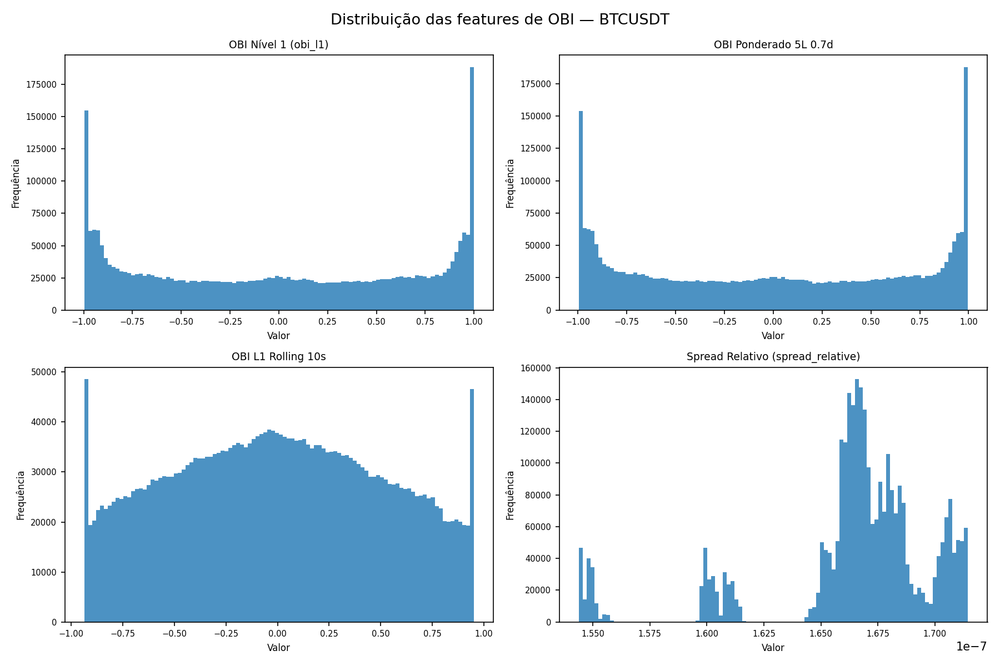
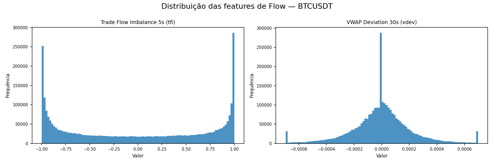
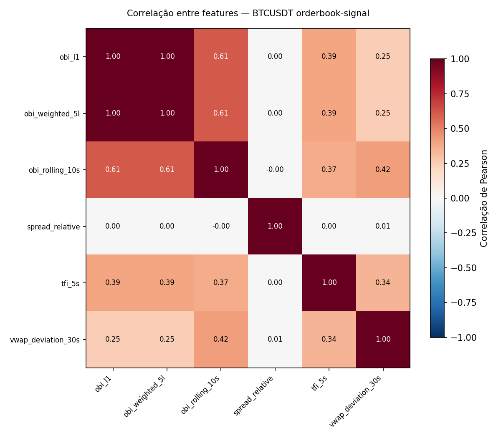
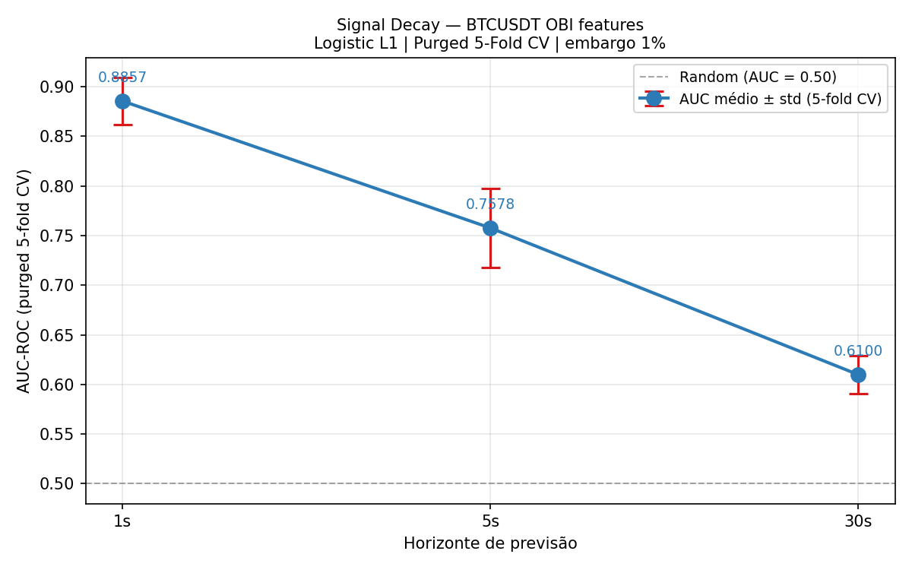
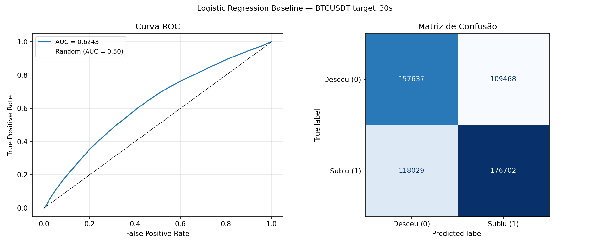
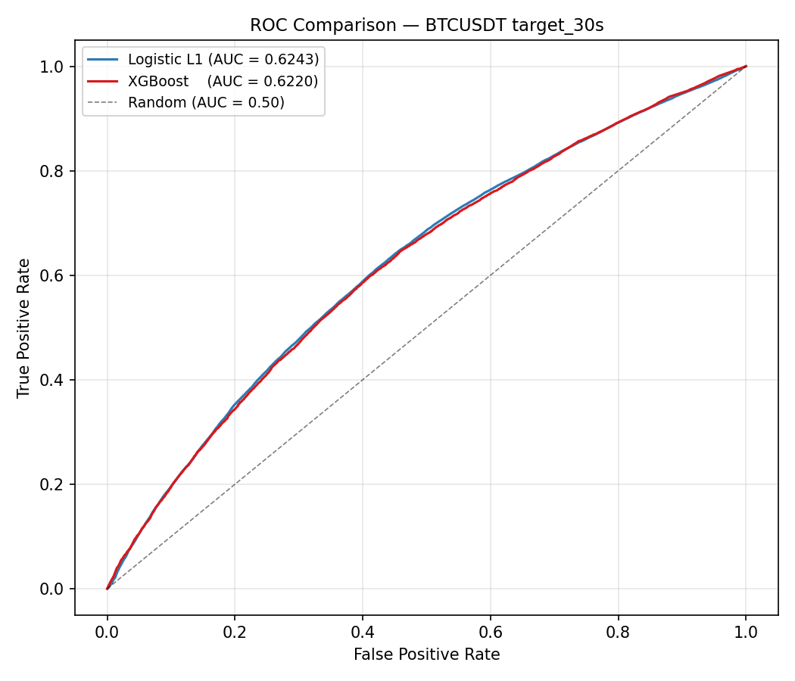
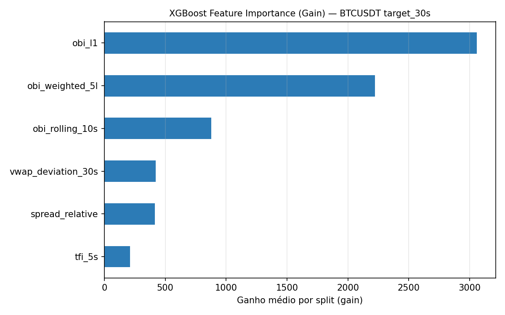
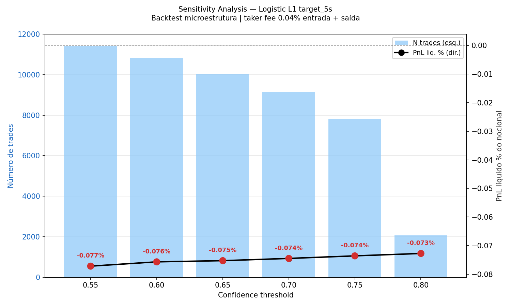

Pipeline completo de coleta, feature engineering e modelagem preditiva sobre o L2 order book do par BTC/USDT na Binance. O order book imbalance prevê a direção do próximo movimento de preço com AUC alto em horizontes curtos, mas o sinal decai rápido e os custos de mercado devoram o edge. O resultado honesto: o sinal existe e é mensurável; a estratégia é inviável como taker.
A complete pipeline for collection, feature engineering and predictive modeling on the BTC/USDT L2 order book at Binance. Order book imbalance predicts the direction of the next price move with high AUC at short horizons, but the signal decays fast and market costs devour the edge. The honest result: the signal exists and is measurable; the strategy is unviable as a taker.
Replay interativo do order book BTC/USDT durante a janela de maior volatilidade coletada (13/jul, 20:51–20:54 UTC). Cada barra é a liquidez disponível em cada nível de preço; os pontos sobre a sparkline são trades reais executados no período. A barra OBI abaixo mostra o imbalance instantâneo, o sinal que este estudo tenta explorar.
Interactive replay of the BTC/USDT order book during the most volatile window collected (Jul 13, 20:51–20:54 UTC). Each bar is the liquidity available at each price level; the dots over the sparkline are real trades executed in the period. The OBI bar below shows the instantaneous imbalance, the signal this study tries to exploit.
Seis features derivadas do book e do fluxo de trades. As de OBI (order book imbalance) concentram massa nos extremos ±1: o book quase sempre pende claramente para um lado. As de flow (TFI, VWAP deviation) têm caudas pesadas de agressão direcional. A matriz de correlação revela o problema que definirá a modelagem: obi_l1 e obi_weighted_5l são quase perfeitamente colineares (ρ ≈ 1.00).
Six features derived from the book and the trade flow. The OBI (order book imbalance) ones concentrate mass at the ±1 extremes: the book almost always leans clearly to one side. The flow ones (TFI, VWAP deviation) have heavy tails of directional aggression. The correlation matrix reveals the problem that will define the modeling: obi_l1 and obi_weighted_5l are almost perfectly collinear (ρ ≈ 1.00).



obi_l1 e obi_weighted_5l carregam essencialmente a mesma informação (ρ = 1.00). Quando ambas entram num modelo linear, a regressão distribui o peso entre elas de forma arbitrária; é exatamente por isso que, mais adiante, o coeficiente de obi_weighted_5l aparece anticolinear (negativo) apesar de a feature ser individualmente preditiva. spread_relative é ortogonal a tudo (ρ ≈ 0).
obi_l1 and obi_weighted_5l carry essentially the same information (ρ = 1.00). When both enter a linear model, the regression splits the weight between them arbitrarily; that's exactly why, further on, the obi_weighted_5l coefficient appears anti-collinear (negative) even though the feature is individually predictive. spread_relative is orthogonal to everything (ρ ≈ 0).
A limpeza inicial deduplicava trades por timestamp apenas. Resultado: 63% dos registros descartados como duplicatas, incorretamente. Na Binance, múltiplos trades ocorrem no mesmo milissegundo quando uma ordem de mercado grande atravessa vários níveis do book. A correção foi a chave composta (timestamp, price, quantity).
The initial cleaning deduplicated trades by timestamp alone. Result: 63% of records discarded as duplicates, incorrectly. On Binance, multiple trades happen in the same millisecond when a large market order sweeps several book levels. The fix was the composite key (timestamp, price, quantity).
Um único agressor atravessando vários níveis indica pressão direcional intensa, o sinal mais forte que o Trade Flow Imbalance tenta capturar. Descartar esses eventos produz uma feature de fluxo sistematicamente subestimada.
A single aggressor sweeping several levels signals intense directional pressure, the strongest signal Trade Flow Imbalance tries to capture. Discarding those events produces a systematically underestimated flow feature.
BTC/USDT tem tick mínimo de $0.01 sobre um preço de ~$62.000, equivalente a 0.000017% do preço. Em 74.9% dos snapshots o mid-price não se move nenhum tick em 1 segundo. A distribuição de classes muda radicalmente com o horizonte:
BTC/USDT has a minimum tick of $0.01 on a price of ~$62,000, equivalent to 0.000017% of price. In 74.9% of snapshots the mid-price doesn't move a single tick in 1 second. The class distribution changes radically with the horizon:
Incluir "flat" como classe negativa em target_1s treinaria um modelo para separar movimento vs estagnação, não direção. A decisão metodológica foi excluir linhas flat em todos os horizontes e comparar sempre "subiu vs desceu", permitindo comparação justa na análise de signal decay.
Including "flat" as a negative class in target_1s would train a model to separate movement vs stagnation, not direction. The methodological decision was to exclude flat rows at every horizon and always compare "up vs down", allowing a fair comparison in the signal decay analysis.
O achado central. Usando purged k-fold cross-validation (5 folds, embargo 1% ≈ 47 min, Logistic L1) com exclusão de flat, o decay do imbalance é monotônico e pronunciado:
The central finding. Using purged k-fold cross-validation (5 folds, 1% embargo ≈ 47 min, Logistic L1) with flat exclusion, the imbalance decay is monotonic and pronounced:

Nota de interpretação: o AUC de 0.886 é condicional a um movimento ocorrer. Como 74.9% dos ticks de 1s são planos, o modelo é avaliado apenas nas 752k linhas não-flat, o que eleva o AUC observado em relação ao universo completo de snapshots.
Interpretation note: the AUC of 0.886 is conditional on a move occurring. Since 74.9% of 1s ticks are flat, the model is evaluated only on the 752k non-flat rows, which raises the observed AUC relative to the full universe of snapshots.
Logistic L1 venceu XGBoost, e o motivo importa. O XGBoost parou na iteração 22 de 500 (early stopping): o sinal de microestrutura é predominantemente linear e aditivo, sem interações não-lineares que justifiquem um ensemble de árvores.
Logistic L1 beat XGBoost, and the reason matters. XGBoost stopped at iteration 22 of 500 (early stopping): the microstructure signal is predominantly linear and additive, with no non-linear interactions to justify a tree ensemble.


Os coeficientes do Logistic L1 confirmam a hierarquia de sinal. obi_l1 domina; a regularização L1 zera as features fracas automaticamente:
The Logistic L1 coefficients confirm the signal hierarchy. obi_l1 dominates; L1 regularization zeroes out the weak features automatically:

Modelo treinado em target_5s (AUC 0.7902 no teste), sinais aplicados a todos os 599.969 ticks do período de teste. Holding de 5s, taker fee 0.04% entrada + saída. O PnL bruto é positivo em todos os thresholds, mas o custo o anula:
Model trained on target_5s (AUC 0.7902 on test), signals applied to all 599,969 ticks of the test period. 5s holding, taker fee 0.04% entry + exit. The gross PnL is positive at every threshold, but cost cancels it out:
Para cada 1 basis point de vantagem direcional capturada, a estratégia paga 17 basis points em taxas taker de mercado.
For every 1 basis point of directional edge captured, the strategy pays 17 basis points in taker market fees.

As limitações no mesmo nível de destaque que os achados positivos.
The limitations, given the same prominence as the positive findings.